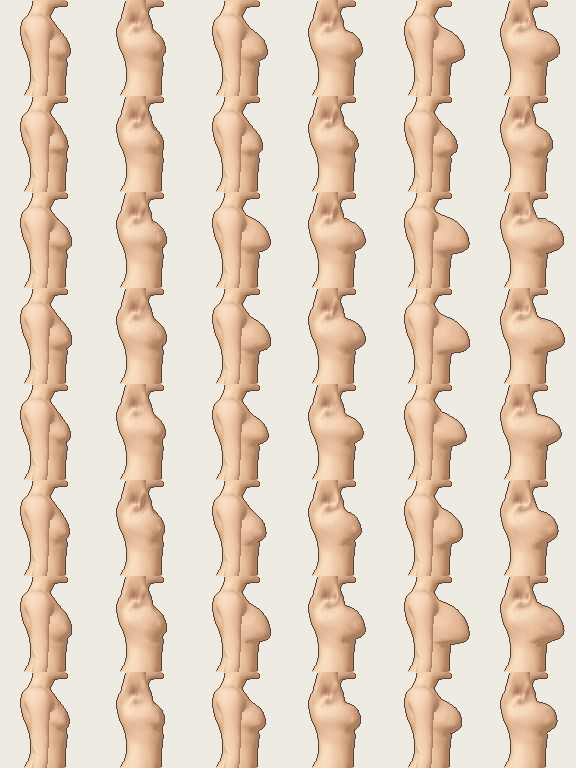

관찰창을 불러오는 중
그림을 끌어 좌우·상하 회전 · 휠로 확대 · 방향키로 5° 회전
같은 얼굴, 실제 48px
정면 · 45° · 측면. 두 판의 카메라 배율과 광원 방향은 같습니다.
34차 연구 기록
33차는 사선에서 먼 눈의 흰자와 눈확의 음영이 경쟁했고, 입매가 48px에서 끊겼다. 성인 모델 촬영 시트에서 미간과 입술의 앞뒤 순서를 보고, 프리렌·힘멜의 설정화에서 작은 화면에 남길 선을 골랐다. 5~8등신 남녀에 같은 세 시점을 적용했다. 참고의 사선은 촬영·작화 각도이며 렌더의 45°와 근사한다.
가슴 기본 형태와 팔 올림
연구마다 분류에 쓴 표본과 기준이 다르다. 이 관찰창의 여덟 형태는 기저 폭, 상·하부 길이, 돌출 위치, 안팎 분포, 하부가 접히는 깊이를 조합한 조형 시작점이다. 먼저 형태를 고른 뒤 여섯 축을 미세 조정한다. 팔을 올리면 옆가슴은 겨드랑이를 따라 움직이고, 흉골 쪽 부착부와 밑주름에는 작은 변위가 걸린다. 팔을 끝까지 올린 모습은 정면·사선·측면 모두에서 확인한다.
바스트 모핑에서 검사한 현상
33차에 들어간 기능은 좌우를 나눈 수직 감쇠와 작은 전후 이동이었다. 34차는 정지 형태, 팔 올림으로 생기는 지속 변형, 자극 뒤 원래 위치로 돌아오는 2차 움직임을 나누었다. 좌우·상하·전후 성분, 크기에 따른 주기, 지지 강도에 따른 감쇠를 따로 바꿔 같은 시각에 비교한다. 달리기 실측은 방향과 지지 효과의 근거로 썼으며, 개인의 실제 조직 물성을 추정한 모형은 아니다.
이번 판에서 다시 고친 부분
처음 만든 넓고 얕은형은 크기를 줄이고 양팔을 올리면 옆가슴의 서로 다른 깊이가 한 평면에 눌렸다. 5등신에서 한 삼각면이 정지 때보다 20.87배로 늘었다. 옆 흉벽 고유의 깊이를 보존하도록 바꾼 뒤, 네 등신·여덟 형태·세 크기·세 팔 각도의 검사 영역 전체에서 면적비는 0.16~4.80이었다. 원래 깊은 주름과 압축이 남은 구간이다. 이 수치는 피부의 실측 변형률과 다르다.
얼굴은 정면의 윗눈꺼풀과 입술 경계가 실제 48px에서 이어지는지, 사선은 먼 눈이 콧등 뒤로 줄어드는지, 측면은 입과 턱이 따로 보이는지 대조했다. 같은 눈매여도 5등신과 8등신 사이의 인상 차이는 아직 작고, 정측면의 입술은 눈보다 흐리다. 연구용 기본형 승인 전에는 이 세 각도를 다시 본다.


